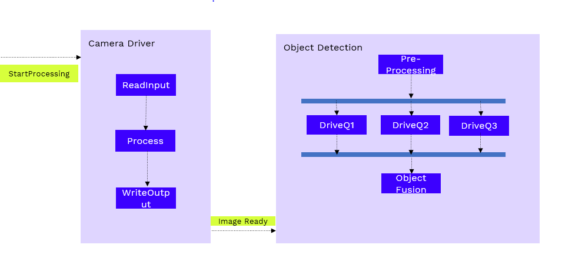
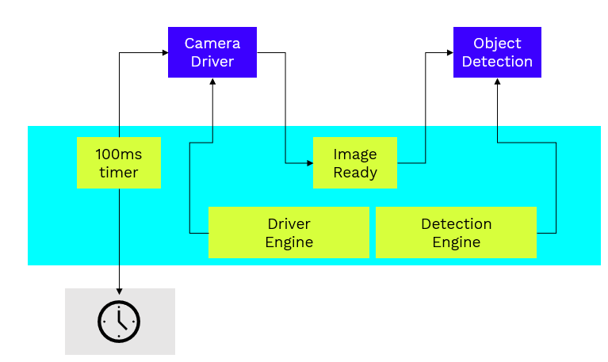

Simple Inter-process Example¶
Introduction¶
This example shows how to use runtime to have a task chain across OS process. It has a program called camera driver and a program called object detection.
We want to achieve the below task flow.
Run camera driver and object detection in two different os processes and map them respective engines.
Code Walkthrough¶
camera_driver¶
At first we import with use keyword to get the required qor-runtime items into scope.
//Imports the required qor-runtime items to be used in this scope
use qor_rto::prelude::*;
Create a instance of camera driver. Then create a timer event and a event for triggering object detection.
//create a instance of camera driver
let camdrv = Arc::new(Mutex::new(CameraDriver::new()));
// timer syncronization event
let timer_event = SingleEvent::new();
// Event to trigger obejct detection
let start_obj_det = IpcEvent::new("start_event");
Create a engine to run the camera driver program.
// The engine is the central runtime executor
let engine = Engine::default();
engine.start().unwrap();
Create a program to simulate the timer behavior.
// our simulation period
const PERIOD: Duration = Duration::from_millis(500);
let tim_prog = Program::new().with_action(
Loop::new().with_body(
Sequence::new()
.with_step(Sleep::new(PERIOD))
.with_step(Trigger::new(timer_event.notifier().unwrap())),
),
);
Create a program to run the camera driver according to the flow shown above. For this we use a Loop action to run continuously and a sequence action to tell that when a timer event comes run the functions(like CameraDriver::read_input) in a sequence and trigger object detection.
// Camera Driver Program
let program1 = Program::new().with_action(
Loop::new().with_body(
Sequence::new()
.with_step(Sync::new(timer_event.listener().unwrap()))
.with_step(Await::new_method_mut(&camdrv, CameraDriver::read_input))
.with_step(Await::new_method_mut(&camdrv, CameraDriver::process))
.with_step(Await::new_method_mut(&camdrv, CameraDriver::write_output))
.with_step(Trigger::new(start_obj_det.notifier().unwrap())),
),
);
Here we wait for the program to complete and then shutdown the engine.
// Spawn the program on the engine
let handle1 = program1.spawn(&engine).unwrap();
let handle2 = tim_prog.spawn(&engine).unwrap();
// Wait for the program to finish
let _ = handle1.join().unwrap();
let _ = handle2.join().unwrap();
// Engine shutdown
engine.shutdown().unwrap();
Object Detection¶
At first we import with use keyword to get the required qor-runtime items into scope.
//Imports the required qor-runtime items to be used in this scope
use qor_rto::prelude::*;
Create a instance of object detection. Then create a event for listening/syncing to start of object detection.
//create a instance of camera driver
let objdet = Arc::new(Mutex::new(ObjectDetection::new()));
// Event to trigger obejct detection
let start_obj_det = IpcEvent::new("start_event");
Create a engine to run the camera driver program.
// The engine is the central runtime executor
let engine = Engine::default();
engine.start().unwrap();
Create a program to run the object detection according to the flow shown above. For this we use a Loop action to run continuously and a sequence action to tell that when a start event comes the flow runs a sequence and internally after pre_processing there is a Concurrency action used to allow drive_q1, drive_q2 and drive_q3 to run parallel if resources are available.
// object detection program
let program = Program::new().with_action(
Loop::new().with_body(
Sequence::new()
.with_step(Sync::new(start_obj_det.listener().unwrap()))
.with_step(Await::new_method_mut(
&objdet,
ObjectDetection::pre_processing,
))
.with_step(
Concurrency::new()
.with_branch(Await::new_method_mut(&objdet, ObjectDetection::drive_q1))
.with_branch(Await::new_method_mut(&objdet, ObjectDetection::drive_q2))
.with_branch(Await::new_method_mut(&objdet, ObjectDetection::drive_q3)),
)
.with_step(Await::new_method_mut(
&objdet,
ObjectDetection::object_fusion,
)),
),
);
Here we wait for the program to complete and then shutdown the engine.
// Spawn the program on the engine
let handle1 = program1.spawn(&engine).unwrap();
let handle2 = tim_prog.spawn(&engine).unwrap();
// Wait for the program to finish
let _ = handle1.join().unwrap();
let _ = handle2.join().unwrap();
// Engine shutdown
engine.shutdown().unwrap();
How to Run the Code¶
In two different terminals run
`bash
cargo r --example object_detection
`
`bash
cargo r --example camera_driver
`